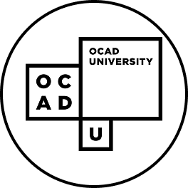
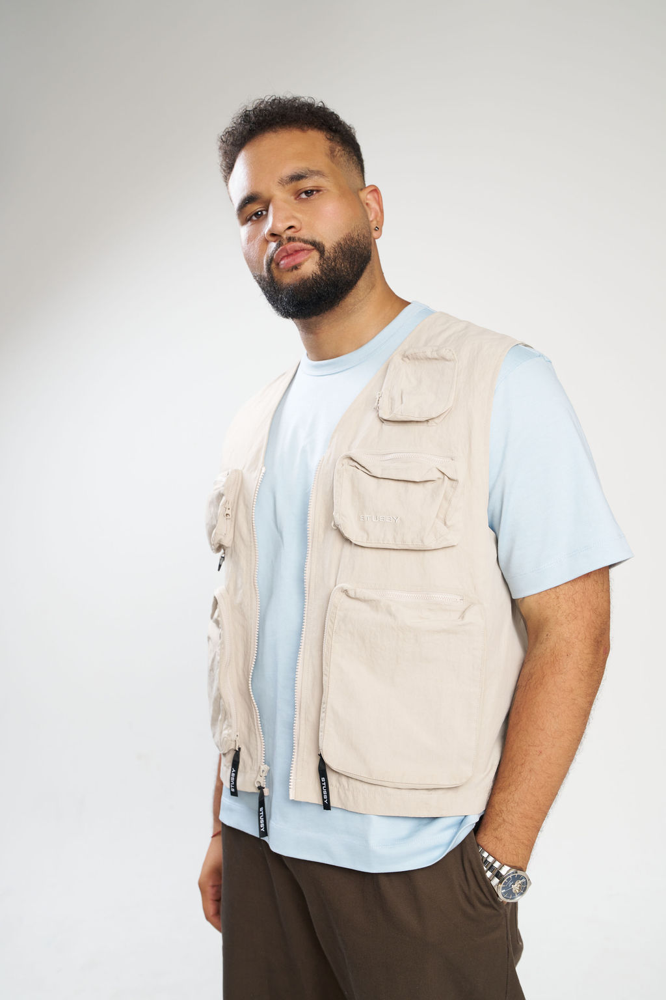

Work / In Public
Ideas tested in public.
Worldbuilding, installations, films, learning programs, and research experiments developed with our collaborators.
- 0
- Exhibition audience
- New York / Barcelona / Vancouver
- 0
- Talks + workshops
- Keynotes to classrooms
- 0
- Hardware donated
- Access made tangible
- 0
- Film audience
- Online + in theatres
Research
Research should not stay behind closed doors.
We share what we learn so others can understand, question, and shape emerging technologies.
Latest Articles
Subscribe via RSSResearch Notes
Notes will appear here soon.
Published research, experiments and process notes will show up here once they are live.
Collaborate / Three Ways In
Bring us the unknown. Leave with a clear path forward.
We partner with institutions and organizations to explore ideas, test possibilities, and build projects that combine technical depth with creative insight.


Education / Classrooms + Stages
Learn to question, shape, and use emerging technology.
We design learning experiences for students, educators, professionals, and creative communities.
University Lectures + Workshops



Beyond Campus
Press Coverage


About
Built by people who bridge art and engineering.


Contact
Tell us what you want to move forward.
You don't need a finished brief. Start with what you know.